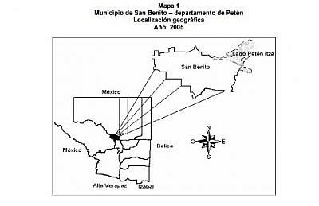

La población de San Benito se reparte sobre la cabecera municipal, la aldeas de San Antonio y La Cobanerita, y entre caseríos que son: El Galón, El Guacut, Belén, El Doce, Nueva Caridad, La Nueva Esperanza, Ojo de Agua, Piedrín, San Juan, Sono Guitz, Lago del Pato, Panorama, Tikal, y Primavera.
La cabecera municipal está dividida en veintidós barrios y otros en proceso que pueden ser contenidos en seis zonas:
-
Barrio La Ermita, 3 de abril y Playa Blanca
-
Nuevo Porvenir, Las Flores y La Democracia
-
El Trébol, Valle Nuevo, La Candelaria y El Redentor
-
El Pedregal y Colonia «20 de Mayo»
-
Colonia «Del Maestro» y Colonia «Vista Hermosa»
-
Nueva Esperanza, San Juan, Caridad, y colonia «Itzá»
